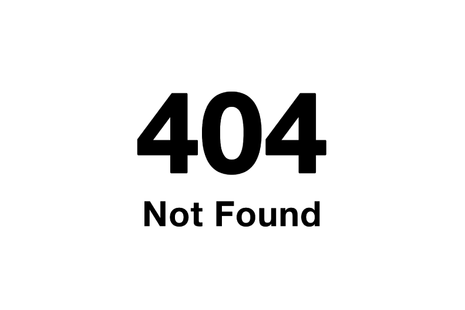

404 NotFound
制作期間：3ヶ月
使用ツール：Illustrator,CLIP STUDIO
メンバー：7人
2021年11月23日~11月26日の3日間、同じ学科の学生7人で学内展示を行いました。インターネット世界をテーマに空間演出を行い、イラスト、写真、映像などを展示しました。
私達の所属している学科は学べることが多い分、情報伝達に対するアプローチ方法も多様であり、一人一人が個性を持った作品を制作します。様々な個性が集まる学科と、様々な情報が集まるインターネット、その2つを掛け合わせたユニークな空間を体験して欲しいと思い、展示会のテーマとして取り入れました。